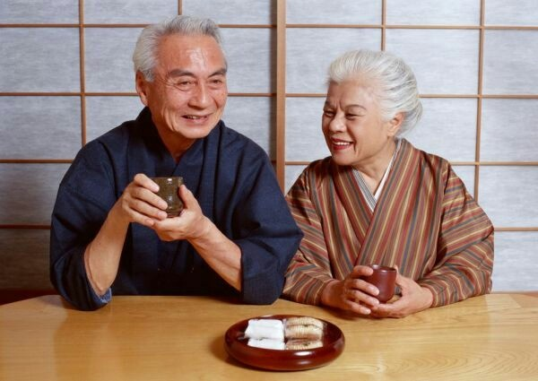
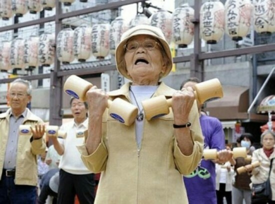

@刘耘博士:
【转发:中日两国在居家养老措施方面存在的主要差异】这主要体现在三个方面：一是日本居家养老是以护理保险制度为基础，就是政府出钱请护理人员上门服务，老年人自己只需负担10%的费用。中国居家养老，包括请保姆在内的各项服务都需要自费，老年人负担很重。二是日本有专门支撑家庭护理服务的人员培训与考核体系，所有护理人员均拥有国家专业资格证书，所有服务人员都有专业公司管理，而中国大多数是请私人保姆来护理。三是日本居家养老的福利种类很多，共有13大类，基本可以满足不同老年人的不同需求。中国虽然近几年发展了社区老年护理，但还是缺少完备的服务体系和内容。
那么在日本，当一个人进入65岁的大关后，他能够享受政府的哪一些养老服务呢？
首先，日本政府会给他一笔20万日元（大约1万2000元人民币）的钱，用于其个人住宅的改造，以创造一个适合于老年人生活的环境。譬如说，家里各处要装护手，厕所要进行适当的改造，要添置老年人专用的浴缸等等，都可以向当地的市政府去报销。这是日本对于每一位65岁以上的老人提供的一项特别的福利。
其次，老年人购买轮椅、手杖、护理床等，90%的费用由政府承担，个人只需要承担10%。政府还每年给老人10万日元，相当于6000元人民币，用于购买尿不湿等老人护理用品。
第三，日本政府将根据你的身体健康状况，对你作出护理等级的评定，然后根据不同的等级，支付给你不同金额的护理保险费，每个月最低的是5万日元，大约3000元人民币，最高的有10几万日元，相当于1万元人民币。这笔钱干什么呢？就是请专业的护理人员来家里帮你洗澡，帮你打扫卫生，帮你按摩，甚至帮你做饭。或者每周一至2次开车来接行动不便的老人去附近的养老院，洗个温泉澡，吃一顿中饭，睡一个午觉，然后与老人朋友们聊聊天，傍晚时分，再开车送你回家。
对于孤寡老人，日本各地政府还有一项特殊的“安危确认制度”，也就是要随时掌握老人的健康状况、是否还活着、有什么需要。那么这一项确认制度，是政府联系公共事业部门或者企业来共同实施的。譬如说电力公司、自来水公司、煤气公司的抄表员、快递公司和邮局的快递员、还有各报社的送报员等，他们在巡视中，如果发现订的报纸有好多天没人取了、白天也一直亮着灯等等，必须向指定的政府部门报告，以防止孤寡老人遭遇意外之后无人知晓。
还有一种老年人服务，就是政府通过补贴的方式，给孤寡老人送盒饭。这些盒饭委托附近的24小时便利店配送。由于盒饭一日三餐都需要配送，因此盒饭配送员就成了老人们健康的监督员，并每天要负责填写老人情况报告书，向当地的市政府报告，而当地政府支付给24小时便利店一笔资金作为奖励。
那么在日本，当一个人进入65岁的大关后，他能够享受政府的哪一些养老服务呢？
首先，日本政府会给他一笔20万日元（大约1万2000元人民币）的钱，用于其个人住宅的改造，以创造一个适合于老年人生活的环境。譬如说，家里各处要装护手，厕所要进行适当的改造，要添置老年人专用的浴缸等等，都可以向当地的市政府去报销。这是日本对于每一位65岁以上的老人提供的一项特别的福利。
其次，老年人购买轮椅、手杖、护理床等，90%的费用由政府承担，个人只需要承担10%。政府还每年给老人10万日元，相当于6000元人民币，用于购买尿不湿等老人护理用品。
第三，日本政府将根据你的身体健康状况，对你作出护理等级的评定，然后根据不同的等级，支付给你不同金额的护理保险费，每个月最低的是5万日元，大约3000元人民币，最高的有10几万日元，相当于1万元人民币。这笔钱干什么呢？就是请专业的护理人员来家里帮你洗澡，帮你打扫卫生，帮你按摩，甚至帮你做饭。或者每周一至2次开车来接行动不便的老人去附近的养老院，洗个温泉澡，吃一顿中饭，睡一个午觉，然后与老人朋友们聊聊天，傍晚时分，再开车送你回家。
对于孤寡老人，日本各地政府还有一项特殊的“安危确认制度”，也就是要随时掌握老人的健康状况、是否还活着、有什么需要。那么这一项确认制度，是政府联系公共事业部门或者企业来共同实施的。譬如说电力公司、自来水公司、煤气公司的抄表员、快递公司和邮局的快递员、还有各报社的送报员等，他们在巡视中，如果发现订的报纸有好多天没人取了、白天也一直亮着灯等等，必须向指定的政府部门报告，以防止孤寡老人遭遇意外之后无人知晓。
还有一种老年人服务，就是政府通过补贴的方式，给孤寡老人送盒饭。这些盒饭委托附近的24小时便利店配送。由于盒饭一日三餐都需要配送，因此盒饭配送员就成了老人们健康的监督员，并每天要负责填写老人情况报告书，向当地的市政府报告，而当地政府支付给24小时便利店一笔资金作为奖励。
- 
- 